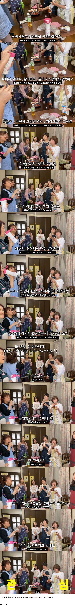

웃어른에게 늙은이라고 안하긴하지..

웃어른에게 늙은이라고 안하긴하지..
틀딱이라고 존나하잖아....
부모한테 대놓고 틀딱이라 한다고?
하는 새끼들이 있긴해
눈앞에 두고는 안하지...
그...현실을...
면전에서 틀딱이라고 하세요…?
왜 존나하셨음..
님아
커뮤와 인생이 바뀌셨습니까 휴먼?
개드립은 현실이아니야 일어나라 네오
한국에서는 부모한테 욕,본명 부르거나 늙은이라거나 하면
바로 싸다구 후려맞을 각오해야지 뭐
쿠소지지!
우루세 바바
부모님한테 저런 소리하면 뭔가 절연을 선언하는 느낌이라 그런가 사춘기 때도 절대 못하겠던데
심리적 저항감이 존나 쌔게 걸려있지
이것저것 참견하지마 큿소바바
하긴 일본 드라마 가끔 보면 버릇없는 애들이 대놓고 늙은이 할방구 서슴없이 말하더라
면전에 하는말이면 '꼰대같이' 정도까지는 본거같네
짜증나 정도 말곤 한적없는거 같은데
영감님이라고는하지만 면전에서 늙은이라고 말하나...??
저런말은 보통 ㅈ같은 새끼들 한태나 '할 수 도' 있는 말이지
유교에선 나이가 먼저 들수록 어른답게 행동 하고
아래 사람은 그런 어른을 존경 하고 어른답게 대하라고 했는데
어른다운건 어디다 팔아먹고 어른대접만 하라고 바뀜 ㅋㅋㅋ
뭔소리야? 어른답게 행동하라는 소리를 평생 들어본적도 없는 어린애야?
어른다우라는 압박도 센거 맞다고 봄
그거 걸러서 남은게 틀딱 진상들인겨ㅋㅋㅋ
어지간히 인성 개차반이어도 면전에다 대고는 안하고
뒷담할 때나 우리집 늙은이 우리집 틀딱 운운하던데
것도 좋게 들리진 않아서 새로운 뒷담거리가 되는 느낌이지
2000년대초반 영화에선 꼰대 라고 하잖아 우리 꼰대가~
노인네 노친네라고는 하더라
면전에다 안할뿐이지 사실 뭐 뒤에서는 더 심하게 말하니까... 모르겠다 차라리 뒤에서 말안하고 앞에서 차라리 노인네 라고 말하는거 다 나은건지 아니면 아닌건지
노인네
노인장
반송장
부모한테 늙은이라고 한다고??? 일본 그래?
딸피 반피라고 하지
늙크크 라고는 하던데
아빠 놀릴때 노인네라고 하긴 하는데 ㅋㅋ
그런 얌전한 말을 안하는거지
우린 틀딱이라고 대놓고 비하하는데
노인네
늙크크로 대체..
저거 실제로도 하는거라고? ㅋㅋ
친인척 면전에다 한다고?
아 노친네 고집 진짜 쎄시네
드라마에서 많이 들은거같은데
대놓고는 잘 안하지 않나?? 그냥 누구한테 말할때
우리집 노인네가~ 늙은이가~ 꼰대가~ 이런식으로 하는정도
영감탱이
바로 호적파일듯
그건 친근한 표현이라 상황이 다르긴 한데 아무리 화나도 노땅 늙은이 이런말은 잘 안하지 ㅇㅇ..